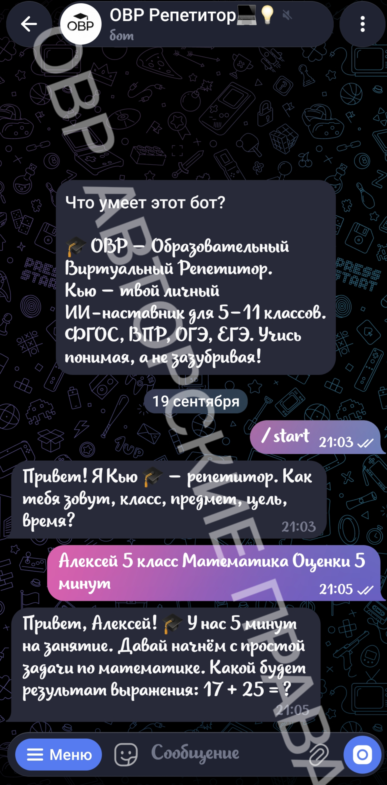
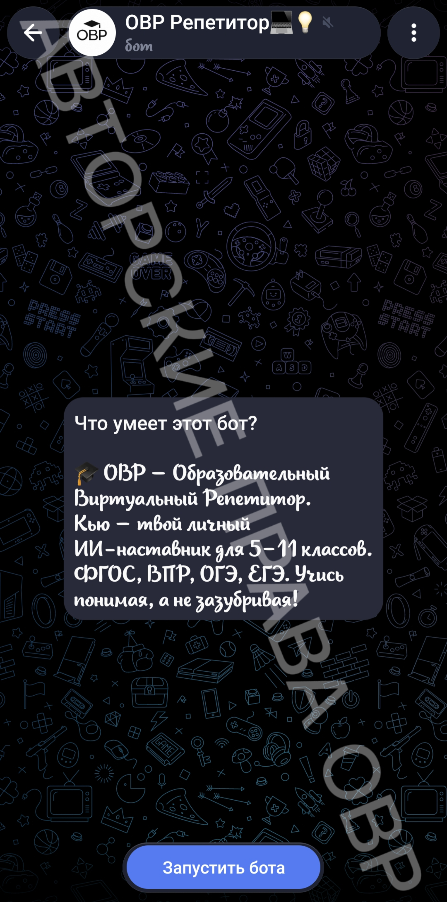
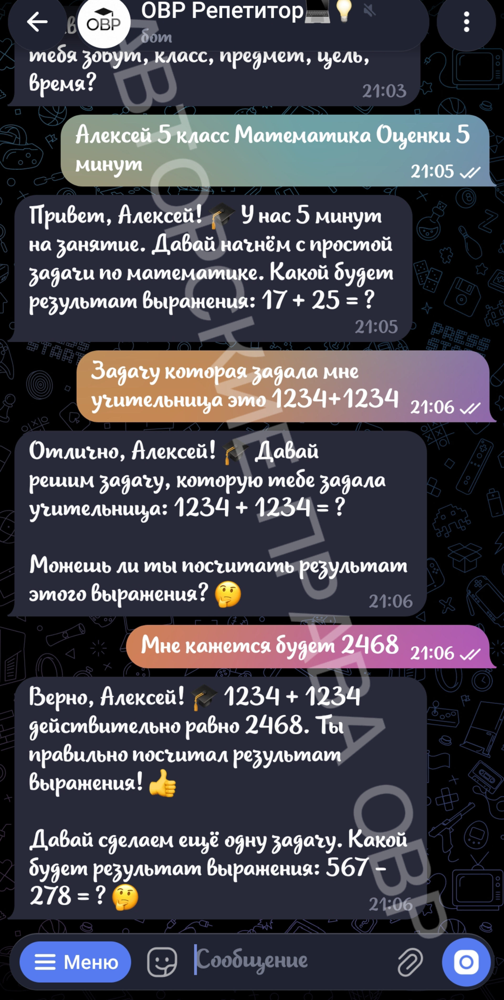

Пошаговая инструкция с картинками.
Найди в Telegram @ovr_repetitor_bot или нажми кнопку ниже.

Кью спросит твоё имя, класс, предмет и цель. Ответь — и начнём!

Кью даст задачу. Реши её — и получишь следующую.

За правильные ответы — очки, уровни и значки.
Напиши /itog — Кью покажет, что ты прошёл.
/start — Начать занятие/reset — Сбросить историю/itog — Дневник прогресса/domashka — Домашка/vpr — Режим ВПР/oge — Режим ОГЭ/ege — Режим ЕГЭ